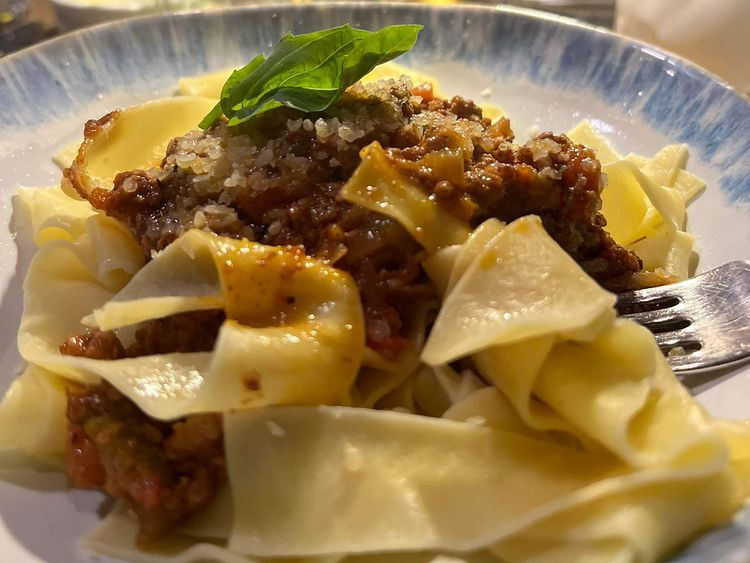

Bolognese Tagliatelle

Description
This tagliatelle Bolognese is a labor of love
that is not your traditional red meat sauce.
Bolognese is a delicious meat sauce that is
refined and simmered for hours to bring out
the great flavors of all the ingredients.
Combine it with tagliatelle or with your
favorite pasta to create a satiny, creaminess
from the pasta starches that make this a
memorable meal. Serve with a loaf of crusty
Italian bread.
Ingredients
- 4 ounces pancetta bacon, finely diced
- 3 carrots, finely diced
- 3 stalks celery, finely diced
- 2 onions, finely diced
- 3 tablespoons extra-virgin olive oil
- 1 pound 85% lean ground beef
- 1 pound ground pork
- ½ cup dry white wine
- 1 (28 ounce) can San Marzano whole peeled tomatoes, drained
- ½ teaspoon ground nutmeg
- ½ teaspoon salt
- ¼ teaspoon crushed red pepper
- 1 cup beef stock
- ¼ cup heavy cream
- 1 (16 ounce) box tagliatelle pasta
- ¼ cup grated Parmesan cheese, or to taste
Steps
-
Cook pancetta in a pan over medium heat
until it has released its fat and is crisp,
7 to 8 minutes. Add carrots, celery, and onions;
cook until vegetables soften and onions
are translucent, 7 to 8 minutes. Set aside.
-
Heat olive oil in a 4-quart pot over medium heat.
Break ground beef and pork into small chunks
and add them to the pot; cook, stirring
lightly, until browned, 7 to 8 minutes.
-
Stir pancetta-vegetable mixture into ground meat.
Add wine. Reduce heat to medium-low and stir,
breaking up meat until finely ground, until
wine has evaporated and the pot is almost dry,
13 to 15 minutes. Add tomatoes, nutmeg, salt,
and red pepper. Use the back of a spoon
to break up tomatoes and continue to break down
meat mixture into tiny bits, about 5 minutes.
-
Pour beef stock and heavy cream into the pot
and reduce heat to lowest setting. Simmer,
partially covered and stirring occasionally,
for at least 2 hours.
-
Meanwhile, fill a large pot with lightly salted
water and bring to a rolling boil. Cook
tagliatelle at a boil until tender yet firm
to the bite, about 8 minutes. Reserve 1 cup
pasta water and drain well.
-
Stir pasta into Bolognese sauce and mix well,
adding a little reserved pasta water if
needed to develop a satiny coating. Top with
grated Parmesan cheese.
Home